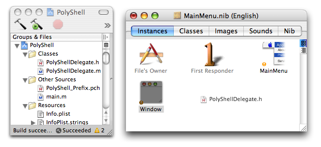

This tutorial will show you how to create an example application that uses the GridEZ framework. The tutorial assumes you are using Xcode 2.2. The final project will be identical to the PolyShell example provided in the GridEZ distribution.
The application is called PolyShell, because it allows the user to enter a series of shell commands and have them all executed using Xgrid.
In Xcode, select the "New Project..." item in the File menu, and select the "Cocoa Application" item in the list of templates.
Name the project PolyShell, and save your project where you know you can find it later (or not).
The available binary for GridEZ framework was compiled to make it embeddable in other applications, so it does not require a separate installation and will come and go with the application that makes use of it. Adding a framework and making it embeddable is already documented in many different tutorials. If you have not done it in a long time, you don't need to Google for these tutorials, just read below.
Embedding a framework into your application takes 3 steps:
For now, the GridEZ.framework is nowhere to be seen in the project. Let's first get that right. For this tutorial, we will put the framework in a location where Xcode will easily find it, in the folder ~/Library/Frameworks. Well, you do that: copy the framework in your home directory, in ~/Library/Frameworks.
Now, drag the framework from the Finder into the "Groups & Files" pane of your Xcode project. If your mouse handling is good, you might even be able to nicely drop it in the "Linked Frameworks" group, which is itself inside the "External Frameworks and Libraries" group. In the dialog sheet that opens, make sure that the check box for you target is selected, and that you do NOT make a copy of the framework in your project folder (the framework simply lives in ~/Library/Frameworks).
The linked frameworks should now look like this:
Finally, to embed the GridEZ.framework in the final application bundle, you should add a copy phase to the target, by selecting the menu Project, submenu New Build Phase, item New Copy Files Build Phase. This will add an item in the 'Groups & Files' pane: Targets/PolyShell/CopyFiles.
The inspector panel for that Copy Files item should open automatically (or you can use the Get Info menu item of the File menu to open it). In this inspector panel, select Frameworks in the pop-up menu for Destination.
Then, in the Groups & Files pane, drag the GridEZ.framework item into the newly created CopyFiles group. Your target should look like this:
The XgridFoundation.framework is the official Apple's framework for Xgrid. You will need to link to it explicitely to use any of the classes, functions or constants defined by XgridFoundation. While GridEZ.framework considerably reduces the use of XgridFoundation, it does not aim to completely hide XgridFoundation, and it is likely you will need to use some of the symbols in there too. For example, PolyShell will use the NSString keywords defined by XgridFoundation to describe the specifications of a job (see the code below), and it is likely that most applications you would write around GridEZ would have at least the same requirements.
So we need to link to XgridFoundation. This is easier than linking to GridEZ.framework. In the Project menu, select the Add to Project item. Select the XgridFoundation.framework in the Open panel, by going to /System/Library/Frameworks.
In the dialog sheet that opens, make sure the check box for you target is selected, and that you do NOT make a copy of the framework in your project folder.
The linked frameworks should now look like this:
The user interface that we will create for PolyShell is dead simple and consists of 2 elements:
So for example, the user might type:
/usr/bin/cal 2001
/usr/bin/cal 2002
/usr/bin/cal 2003
/usr/bin/cal 2004
/usr/bin/cal 2005
And Xgrid will get these 5 commands processed in parallel by the different computers ("agents") on whatever grid the user has authentified and connected to.
Note how I just said "whatever grid the user has authentified and connected to". You might wonder how and when that will happen. I have not said anything about that in the user interface, but we have to have that functionality too! We want the user to be able to browse Xgrid controllers on the local network, connect to them and type a password if necessary. While we are on it, it would also be nice to let the user see the results when the job is finished (duh!). The good news is all of this is already built in GridEZ, so the whole connection process and the accompanying user interface is reduced to only one tiny little method call. For result retrieval and display, same thing. More on that later, when we write the implementation. As far as Interface Builder is concerned, we won't have to do anything special to get all this free stuff.
Before switching to Interface Builder, we will first add a PolyShellDelegate class in Xcode, and write just the header to make connections in Interface Builder. To create the files for the class, click the File menu and choose the New File... item. In the dialog window that opens, choose to add an Objective C class, and name the new file "PolyShellDelegate.m". Make sure you check the box to also create the header file PolyShellDelegate.h.
Remember how I said above we will have just two UI elements, a text view and a button. In the header, we will have one IBOutlet and one IBAction: one connection to the text view that holds the commands, and one action triggered by the "Submit" button. Add the following code in the header file PolyShellDelegate.h:
@interface PolyShellDelegate : NSObject {
IBOutlet NSTextView *commandView;
}
- (IBAction)submit:(id)sender;
@end
Now, double-click on MainMenu.nib that you will find in the Resources folder. The nib file will open in Interface Builder. Keep Interface Builder in front, and try to get a hold of the PolyShellDelegate.h file icon in Xcode, then drag it in the MainMenu.nib window in Interface Builder. This will let Interface Builder know about this class, so we can instantiate it.

Indeed, after dragging the file, the PolyShellDelegate class is selected in the class browser:
Create an instance of PolyShellDelegate class in the nib file, by choosing Instantiate PolyShellDelegate in the Classes menu. The new instance will appear in the MainMenu.nib main window. Rename the instance "app delegate" by double-cliking on the name.
Open the main window of our new app by double-clicking on the Window icon, and modify the layout so that it looks like the screenshot below. Make sure the commands field is an NSTextView. Modify the Size settings in the inspector so that the size changes as the window is expanded (springs in the inside box), and change the Font to something monospace like Monaco 10. Set the keyboard shortcut of the Submit button to "Return".
You will have to create 2 connections. The first is to let the app delegate instance know where the commands are. Control-click-drag from app delegate to the NSTextView, and click Connect in the Inspector window.
Next, is to let the nib know what to do when the user clicks Submit. For this, we will set the target of the button to the app delegate instance and the action to submit:, as shown below:
Finally, we want the PolyShellDelegate instance that we called app delegate to be the application delegate (now you know why we named it app delegate). To set it up, connect the delegate outlet of the NSApp icon to the app delegate instance:
For the sake of completeness, you might want to insert PolyShell where appropriate in the menu bar (double-click on the MainMenu item in the MainMenu.nib window to access the menu bar)
Now save the MainMenu.nib document, and close it. We are done with it.... Back to Xcode!!
The project will only use one class, PolyShellDelegate, that will serve as the application delegate and as a controller for the user interface. This class is only instantiated once, in the MainMenu nib, loaded when the application starts. That singleton instance will take care of the following:
The only place where we need to write code is in the implementation file "PolyShellDelegate.m". Before we write any methods, we need to make sure the compiler knows about the GridEZ headers by adding this #import on top (an alternative is to have it in the precompiled header):
#import <GridEZ/GridEZ.h>
Let's take care of item 1 immediately:
- (void)applicationDidFinishLaunching:(NSNotification *)aNotification
{
[GEZManager showXgridPanel];
}
GEZManager is a class that provides access to some of the general functionality for GridEZ, such as displaying this panel. Note that this panel is actually intended more for debugging purpose. It will reveal the internals of Xgrid, with the details about grids, jobs, tasks, and result files. In most applications, you don't need the user to know about any of that. You just want the user to be able to browse local Xgrid servers using Bonjour or contact remote servers, and connect/authenticate to them. Of course, the panel revealed by showXgridPanel also lets the user connect to Xgrid controllers, but it offers much more, in particular to debug and check what is going on with the jobs you submitted. To limit the functionality strictly to Xgrid controller browsing and connection, you should instead call showServerWindow on that same GEZManager class. For most applications, this is all you need and will make the user experience easier and simpler.
In some applications, the user might be fully aware of the Xgrid internals, and using showXgridPanel might be the best way to provide the functionality you need. In our example, this is actually the case. So we just use it!
If you are very curious and dying to know how that Xgrid panel looks like, you could Build and Run the application now. Remember to come back here to finish the code for that cool killer app.
When the application quits, we want to save the current information about the grids and jobs used and created by the application:
- (void)applicationWillTerminate:(NSNotification *)aNotification
{
NSError *error;
if ( [[GEZManager managedObjectContext] save:&error] == NO )
NSLog(@"Error while saving: %@", error);
}
That code is probably a little more mysterious than the above. What you don't know yet is that behind the scenes, GridEZ is using CoreData. You don't need to know anything about CoreData, but you might want to know the following:
In any case, you just need to understand that the above code saves all that information to disk, in the Application Support folder, when the application quits. You can safely cut and paste the same code snippet in any other place in your code where you would want to save the latest information, for example triggered by the Save item of the File menu. If you never explicitely save, the application will have forgotten everything the next time it starts. In some cases, you might just want that. Note that, because of the way CoreData is set up, a file will still be created, but it will not have any real contents.
If you are familiar with CoreData, you might see in the GridEZ headers that it supports multiple stores. In theory, this means the framework should be able to embed the GridEZ objects in the managed object context of your documents, for instance if you are using NSPersistentDocument. However, as of version 0.3, I have only tested the use of the application-wide default managed object context, stored in the application support directory.
If you are not familiar with Xgrid yet, the following paragraph may seem somewhat theoretical. However, you probably want to come back to it once you get a better understanding of Xgrid. If you are familiar with Xgrid, you have to understand some important differences between GridEZ and the underlying XgridFoundation framework:
In the Xgrid model, information about jobs is stored by the Xgrid Controller, while Xgrid Clients (e.g. your application) only get proxies for grids and jobs at runtime, through the XGJob and XGGrid objects. When the Client application drops the connection and quits, all that information is locally lost (only stored remotely by the Controller). GridEZ adds a layer on top of XGJob and XGGrid that keeps a lot of that information locally, in a place accessible by the client application even if the connection to the controller is dropped, and that can be revived after the application opens again
If you have an XGGrid object called aGrid, then the output of [aGrid jobs] is an NSArray of XGJob that contains all the jobs that have been submitted to this grid, either by your application, or by other clients. In contrast, with a GEZGrid object, the default output of [aGrid jobs] returns an NSArray of GEZJob, that only contains the jobs that were submitted by your application. This is not a bug or a limitation, but the intended behavior! The rationale is that in most cases, your application only cares about the jobs it submitted itself. If you really need to see all the jobs, you may load them with a method in GEZGrid (Addendum: not implemented as of version 0.3, sorry!).
To submit a job, you need to describe it, there is no way around that. Xgrid has its own syntax for job specification, using a simple NSDictionary with predefined keys. The specification format is described in great detail in the man page for the xgrid command, where the NSDictionary is replaced with an xml-formatted file. As of this writing, the specification format is not documented in the Xgrid Foundation documentation in XCode, but the keys are defined in the header for XGJob. The bottom line is: you need to combine the information from the man page of xgrid with the keys from XGJob.h header. I promised less talking, so see Annex A and Annex B at the end of this tutorial for a copy of these documents.
Instead of reinventing yet another format, GridEZ simply use the same job specification format as Xgrid. While this format is quite verbose, it is also flexible, includes lots of useful options, and is relatively easy to use. In future versions of GridEZ, I will likely include some other way to submit jobs that will retain some of that complexity, while making it less verbose and very easy to use (sounds good, no?).
Now, back to PolyShell. The user has typed a series of command in the text view. Each line corresponds to a different command. In the code for the -submit: action, we simply split the commandView contents in separate strings, one per line, and will let another method build the jobs specification for it.
- (IBAction)submit:(id)sender
{
//create the job specifications
NSArray *commands = [[commandView string] componentsSeparatedByString:@"\n"];
if ( [commands count] < 1 )
return;
NSDictionary *jobSpecification = [self jobSpecificationWithCommands:commands];
//submit the job
GEZJob *newJob = [GEZJob job];
[newJob setDelegate:self];
[newJob submitWithJobSpecification:jobSpecification];
}
The job submission is very simple and self-explanatory. By making self the delegate of the new GEZJob, we are given access to a bunch of useful callbacks that we can use to keep an eye on that job (see GEZJob.h for the list). By default, the results for newly submitted GEZJob are loaded automatically after they are finished (but this can be changed using setShouldRetrieveResultsAutomatically:), so we could for instance add this delegate method:
- (void)jobDidRetrieveResults:(GEZJob *)aJob
{
NSLog(@"Results retrieved for job '%@'",[aJob name]);
//now, do some post-processing...
//plenty of fancy code here...
}
In most cases, this is the only delegate method you will need, and maybe also -jobDidNotSubmit: to handle special cases. For the PolyShell example, the user already gets the Xgrid panel to display all the results and manage jobs, so we don't need any additional post-processing code.
We still need to build the job specifications somewhere. Xgrid jobs are defined as a list of tasks, where each task corresponds to a different command. In the simplest case, you only have just one task. In our case, we will submit a job where each command typed by the user corresponds to one task, so there will be as many tasks in the job as the number of lines typed by the user. Let's start with the specifications for one task. In its simplest form, this is very much like defining an NSTask: a command with a path to an executable, and then the arguments. For instance, in the command string /usr/bin/cal 06 2005, the executable is /usr/bin/cal and the arguments are { 06, 2005 }. However, we could use a very simple trick to avoid having to parse the executable and the argument strings from what the user typed. To make it dead simple, we might consider that the string typed by the user is just like a command she would have typed in the shell. So the executable is the shell /bin/sh, and the string typed by the user is used as a parameter to the -c flag. We can add this method to our class:
- (NSDictionary *)taskSpecificationWithCommand:(NSString *)commandString
{
return [NSDictionary dictionaryWithObjectsAndKeys:
@"/bin/sh", XGJobSpecificationCommandKey,
[NSArray arrayWithObjects:@"-c", commandString, nil], XGJobSpecificationArgumentsKey,
nil];
}
Finally, we need to connect the dots and get all these task specifications assembled into a job. For this, Xgrid does not use an NSArray of task, but a dictionary, where the keys for the different task specifications are the "task identifiers", and are simply integers from 0 to n. In addition to the list of task specification, the job can be given a name, an application identifier and specification type (it seems only one specification format is available for now):
- (NSDictionary *)jobSpecificationWithCommands:(NSArray *)commands;
{
// create array of task specifications
int i;
int n = [commands count];
NSMutableDictionary *tasks = [NSMutableDictionary dictionaryWithCapacity:n];
for ( i=0; i<n; i++ )
[tasks setObject:[self taskSpecificationWithCommand:[commands objectAtIndex:i]] forKey:[NSString stringWithFormat:@"%d",i]];
// final job specification
return [NSDictionary dictionaryWithObjectsAndKeys:
XGJobSpecificationTypeTaskListValue, XGJobSpecificationTypeKey,
[commands objectAtIndex:0], XGJobSpecificationNameKey,
@"Polyshell",XGJobSpecificationSubmissionIdentifierKey,
tasks, XGJobSpecificationTaskSpecificationsKey,
nil];
}
Well, this is it!
Build and run. Debug and correct the code as necessary. Then explore the GridEZ headers and build your dream application!
For reference, here is the plist format for job specification as described in the xgrid man page.
<?xml version="1.0" encoding="UTF-8"?>
<!DOCTYPE plist PUBLIC "-//Apple Computer//DTD PLIST 1.0//EN" "http://www.apple.com/DTDs/PropertyList-1.0.dtd">
<plist version="1.0">
<array>
<dict>
<!-- A symbolic name of the job -->
<key>name</key>
<string>Full Job</string>
<!-- Notification of all job state changes will be sent to this email address -->
<key>notificationEmail</key>
<string>somebody@example.com</string>
<key>schedulerParameters</key>
<dict>
<!-- do all of the given tasks need to start at the same time? -->
<key>tasksMustStartSimultaneously</key>
<string>YES</string>
<!-- what's the minimum number that need to start at the same time? -->
<key>minimumTaskCount</key>
<integer>5</integer>
<!-- do not schedule this job until the following job (id's) have finished successfully -->
<key>dependsOnJobs</key>
<array>
<string>23</string>
<string>44</string>
</array>
</dict>
<key>inputFiles</key>
<dict>
<!-- the file 'textfile' will be created on agent machines in the working directory -->
<key>textfile</key>
<dict>
<!-- base64 encoded file data -->
<key>fileData</key>
<!-- 'this is a test' -->
<data>dGhpcyBpcyBhIHRlc3Q=</data>
<!-- should this file have execute permission? -->
<key>isExecutable</key>
<string>NO</string>
</dict>
<!-- create 'textfile' in the directory 'task1'-->
<key>task1/textfile</key>
<dict>
<key>fileData</key>
<data>dGhpcyBpcyBhIHRlc3Q=</data>
</dict>
</dict>
<!-- define some prototype task specifications. Here we can define sets of common parts of taskSpecifications -->
<!-- Any taskSpecifications settings are valid. -->
<key>taskPrototypes</key>
<dict>
<key>echoTask</key>
<dict>
<key>command</key>
<string>/bin/echo</string>
<key>arguments</key>
<array>
<string>echoTask Arguments</string>
<string>are here</string>
</array>
</dict>
</dict>
<!-- specifications of all tasks of this job -->
<key>taskSpecifications</key>
<dict>
<!-- key is symbolic task name -->
<key>0</key>
<dict>
<!-- command to execute -->
<key>command</key>
<string>/bin/echo</string>
<!-- environment dictionary -->
<key>environment</key>
<dict>
<key>MY_ENV_VARIABLE</key>
<string>MY_VALUE</string>
</dict>
<!-- argument array -->
<key>arguments</key>
<array>
<string>HelloWorld</string>
</array>
<!-- use the given file as <stdin> -->
<key>inputStream</key>
<string>textfile</string>
<!-- do not start this task until the following tasks (symbolic names) have finished successfully -->
<key>dependsOnTasks</key>
<array>
<string>1</string>
</array>
</dict>
<key>1</key>
<dict>
<!-- by default use the echoTask prototype settings -->
<key>taskPrototypeIdentifier</key>
<string>echoTask</string>
<!-- override the prototype setting for arguments -->
<key>arguments</key>
<array>
<string>Task 1</string>
</array>
<!-- map a subset of files in the 'inputFiles' section for this task only -->
<key>inputFileMap</key>
<dict>
<key>textfile</key>
<string>task1/textfile</string>
</dict>
</dict>
</dict>
</dict>
<!-- a completely different job -->
<dict>
<key>name</key>
<string>Calendar Job</string>
<key>taskSpecifications</key>
<dict>
<key>0</key>
<dict>
<key>command</key>
<string>/usr/bin/cal</string>
<key>arguments</key>
<array>
<string>6</string>
<string>2005</string>
</array>
</dict>
</dict>
</dict>
</array>
</plist>
For reference, here are the predefined keys that can be used to construct an NSDictionary for Xgrid job specifications. The names of the variables are self-explanatory and easy to relate to the keys appearing in the plist file documented in the xgrid man page (see Annex A above).
extern NSString * const XGJobSpecificationNameKey;
extern NSString * const XGJobSpecificationTypeKey;
extern NSString * const XGJobSpecificationSubmissionIdentifierKey;
extern NSString * const XGJobSpecificationSchedulerParametersKey;
extern NSString * const XGJobSpecificationGridIdentifierKey;
extern NSString * const XGJobSpecificationDependsOnJobsKey;
extern NSString * const XGJobSpecificationInputFilesKey;
extern NSString * const XGJobSpecificationFileDataKey;
extern NSString * const XGJobSpecificationIsExecutableKey;
extern NSString * const XGJobSpecificationTaskPrototypesKey;
extern NSString * const XGJobSpecificationInputFileMapKey;
extern NSString * const XGJobSpecificationCommandKey;
extern NSString * const XGJobSpecificationArgumentsKey;
extern NSString * const XGJobSpecificationArgumentTypeKey;
extern NSString * const XGJobSpecificationPathIdentifierKey;
extern NSString * const XGJobSpecificationEnvironmentKey;
extern NSString * const XGJobSpecificationInputStreamKey;
extern NSString * const XGJobSpecificationTaskSpecificationsKey;
extern NSString * const XGJobSpecificationTaskPrototypeIdentifierKey;
extern NSString * const XGJobSpecificationDependsOnTasksKey;
extern NSString * const XGJobSpecificationNotificationEmailKey;
extern NSString * const XGJobSpecificationApplicationIdentifierKey;
extern NSString * const XGJobSpecificationTypeTaskListValue;